측량및지형공간정보기사 (2019-09-21 기출문제)
1과목: 측지학 및 위성측위시스템
1. 다음 중 GPS 신호가 아닌 것은?
- L1 반송파
- P 코드
- C/A 코드
- K 반송파
(정답률: 84%)

2. 반지름 2m인 구면상의 구면삼각형 면적이 0.213m2 일 때 이 구면삼각형의 구과량은?
- 1° 02′ 32″
- 2° 03′ 14″
- 3° 03′ 04″
- 4° 12′ 09″
(정답률: 70%)
3. 연속적으로 측정한 일련의 GNSS 관측(또는 관측단위)을 무엇이라고 하는가?
- 단독측위
- session
- DGPS
- PDOP
(정답률: 70%)
4. 지구의 질량을 계산하기 위하여 지구의 반지름, 중력가속도 외에 필요한 요소는? (단, 지구는 자전하지 않는 완전구체로 가정)
- 지구의 부피
- 만유인력 상수
- 지구 자전 각속도
- 지구 원심력의 크기
(정답률: 79%)
5. UTM 좌표에 대한 설명으로 옳지 않은 것은?
- 중앙자오선에서의 축척계수는 0.9996 이다.
- 우리나라는 51S와 52S의 지역대에 속한다.
- 경도는 8°, 위도는 6°로 분할하여 나타낸다.
- 위도 80°S부터 84°N까지의 지역을 나타낸다.
(정답률: 64%)
6. GNSS 시스템 및 좌표계에 대한 설명으로 옳지 않은 것은?
- GNSS 시스템은 우주부문, 제어부문 및 사용자 부문으로 구성된다.
- WGS84 타원체의 요소와 GRS80 타원체의 요소는 완전히 일치한다.
- WGS84 기준계는 지구질량 중심을 원점으로 한다.
- GPS 제어국(control station)은 주제어국(master control station)과 감시국(monitor station)으로 구성되어 있다.
(정답률: 83%)
7. GNSS 측위에 대한 설명 중 틀린 것은?
- 절대(단독)측위의 경우 최소 4개의 가시위성(visible satellite)이 필요하다.
- 상대측위 방법을 사용하면 관측시간은 단축되나 높은 측위정확도 확보는 어렵다.
- 상대측위는 기준국이 필요하다.
- 절대(단독)측위는 기준국이 필요 없다.
(정답률: 56%)
8. 특정 지점의 지오이드고가 –10m이고 타원체고가 10m 일 때 정표고는? (단, 연직선편차는 0으로 가정한다.)
- -20m
- 0m
- 10m
- 20m
(정답률: 72%)
9. 깊은 곳의 광물탐사를 하기 위한 탄성파 측정방법은?
- 굴절법
- 굴착법
- 충격법
- 반사법
(정답률: 77%)
10. 지구의 공전으로 인하여 생기는 현상은?
- 운동하는 물체에 전향력이 생긴다.
- 1 태양일과 1 항성일이 차이가 난다.
- 조석이 하루에 2번씩 일어난다.
- 인공위성의 궤도가 서편한다.
(정답률: 59%)
11. GPS 코드 신호의 이중차분(Double Differencing)을 이용하여 정지측위를 실시하는 경우 필요한 위성의 최소 개수는?
- 2개
- 3개
- 4개
- 5개
(정답률: 75%)
12. 다음 중 위성의 케플러 궤도요소가 아닌 것은?
- 궤도의 장반경
- 이심률
- 위성의 질량
- 궤도 경사각
(정답률: 74%)
13. 모호정수(cycle ambiguity)를 결정하여 고정해(fixing solution)를 산출하는 이유는?
- 측위정확도를 향상시킬 수 있기 때문이다.
- 대기효과를 제거할 수 있기 때문이다.
- 사이클슬립을 방지할 수 있기 때문이다.
- 수신기의 갑작스러운 이동을 막을 수 있기 때문이다.
(정답률: 67%)
14. 수십 억 광년 떨어져 있는 준성(Quasar)에서 방사되는 전파를 지구상 복수의 전파망원경(안테나)으로 동시에 수신하여 관측점의 위치좌표를 고정밀로 구하는 방법은?
- VLBI
- SLR
- GPS
- LiDAR
(정답률: 72%)
15. 성과표에서 삼각점 A에 대한 진북방향각이 a = +0° 16′ 42″ 일 때 시준점 B에 대한 방향각이 75° 32′ 51″ 라면 AB 측선의 방위각은?
- 75° 16′ 09″
- 75° 49′ 33″
- 255° 16′ 09″
- 255° 49′ 33″
(정답률: 53%)
16. 지구면 위의 두 점간 최단거리선으로 지심과 지표상의 두 점을 포함하는 평면과 지표면의 교선은?
- 측지선
- 자오선
- 측량선
- 항정선
(정답률: 69%)
17. 중력이상의 주된 원인은?
- 화산폭발
- 태양과 달의 인력
- 지구의 자전 및 공전
- 지구내부의 물질분포
(정답률: 73%)
18. 측지좌표계를 정의하는 데 필요한 요소가 아닌 것은?
- 좌표 원점
- 좌표축 방향
- 타원체 형상
- 지오이드
(정답률: 61%)
19. GNSS 단독측위에서의 정확도에 대한 설명으로 틀린 것은?
- 대류권의 수증기 양이 적을수록 정확도가 높다.
- 전리층의 전하량이 적을수록 정확도가 높다.
- 위성의 궤도가 정확할수록 정확도가 높다.
- 위성의 배치가 천정방향에 집중될수록 정확도가 높다.
(정답률: 70%)
20. 현재 우리나라 측량에서 채택하고 있는 지구타원체는?
- 베셀타원체
- GRS타원체
- WGS84타원체
- 헤이포드타원체
(정답률: 53%)
2과목: 응용측량
21. 그림과 같은 지역의 측량결과에 의한 전체 토공량은? (단, 각 구역의 크기는 동일하다.)
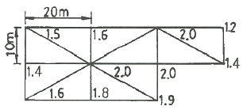
- 1760.0 m3
- 1779.5 m3
- 1786.7 m3
- 3573.3 m3
(정답률: 42%)
22. 하천측량에서 저수위란 1년을 통하여 며칠간 이보다 내려가지 않는 수위를 의미하는가?
- 95일
- 135일
- 185일
- 275일
(정답률: 63%)
23. 터널측량의 특징에 대한 설명으로 옳지 않은 것은?
- 측점표시는 일반적으로 천장에 설치하는 경우가 많다.
- 일반적으로 정밀도가 다른 측량보다 높은 경우가 많다.
- 관측에 사용되는 장비는 망원경의 십자선에 대한 조명이 필요하다.
- 터널 내의 트래버스측량은 개방트래버스일 경우가 많다.
(정답률: 60%)
24. 대축척인 지적도를 작성하는 데에는 일반적으로 기존의 삼각점만으로는 충분하지 않다. 이때 필요한 기준점 설치를 위한 기초측량에 해당되지 않는 것은?
- 지적도근측량
- 세부측량
- 지적삼각보조측량
- 지적삼각측량
(정답률: 66%)
25. 클로소이드에 관한 설명 중 틀린 것은?
- 클로소이드는 곡률이 곡선의 길이에 비례하는 곡선이다.
- 클로소이드는 주로 철도의 완화곡선으로 사용된다.
- 클로소이드는 나선의 일종이다.
- 모든 클로소이드는 닮은꼴이다.
(정답률: 63%)
26. 터널측량 중 지상측량에 속하지 않는 것은?
- 지표중심선측량
- 터널 외 기준점측량
- 지상 수준측량
- 터널 내 중심선측량
(정답률: 63%)
27. 종단곡선을 원곡선으로 설치할 때, 상향기울기 5/1000와 하향기울기 35/1000가 반지름 3000m의 곡선 중에서 교차한다면 곡선시점에서 교점까지의 거리는?
- 120m
- 75m
- 60m
- 30m
(정답률: 45%)
28. 그림과 같은 터널 내의 고저차 측량에서 아래와 같은 결과를 얻었다. 두 점간의 고저차는?
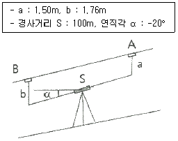
- 33.94m
- 34.46m
- 37.46m
- 49.74m
(정답률: 44%)
29. 수면에서 수심(h)의 0.2h, 0.4h, 0.6h, 0.8h 지점의 유속을 V0.2, V0.4, V0.6, V0.8 이라 할 때 3점법에 의한 평균유속을 구하는 계산식은?
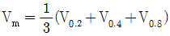
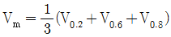
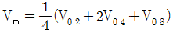
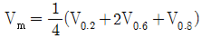
(정답률: 64%)
30. 우리나라에서 바다의 수심을 결정하기 위해 사용되는 기준면은?
- 평균해면
- 기준수준면
- 약최고고조면
- 평균저조면
(정답률: 39%)
31. 그림과 같은 토지의 단면적(A)을 구하는 식으로 옳은 것은?
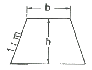
- A = (b + mh)h
- A = (b + m)h
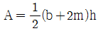
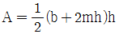
(정답률: 52%)
32. 원곡선을 설치할 때, 곡선의 길이가 104.72m 이고, 곡선의 반지름이 100m 라면 곡선시점과 곡선종점간의 곡선길이와 직선길이가 차이는?
- 4.72m
- 6.46m
- 10.87m
- 18.10m
(정답률: 48%)
33. 그림과 같은 5각형 ABCDE를 동일면적의 사각형 AFDE로 만들기 위해 DC의 연장선에 경계점 F를 설치하였다. BC=30m, ∠ACB=35°, ∠BCF=83° 일 때 CF의 거리는?
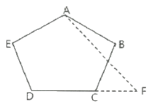
- 15.5m
- 19.5m
- 20.0m
- 23.3m
(정답률: 48%)
34. 단곡선 설치 방법 중 접선과 현이 이루는 각을 이용하여 곡선을 설치하는 방법은?
- 지거법
- 편각법
- 중앙종거법
- 종거에 의한 설치법
(정답률: 54%)
35. 수위 관측소 설치 시 고려사항으로 옳지 않은 것은?
- 상·하류 약 100m 정도는 직선이며, 유속변화가 적은 곳
- 홍수가 발생되었을 때, 관측소의 유실, 이동, 파손될 염려가 없는 곳
- 수위표를 쉽게 읽을 수 있는 곳
- 주변에 비하여 수위의 변화가 뚜렷하게 생기는 곳
(정답률: 70%)
36. 아래 표는 어느 노선의 구간별 토량계산 결과이다. 구간 1~4까지의 누가토량은?
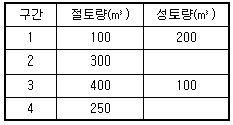
- 750 m3
- 1⑤0 m3
- 1350 m3
- 1400 m3
(정답률: 64%)
37. 하천측량의 일반적인 측량범위에 대한 설명으로 옳지 않은 것은?
- 제방이 없는 하천의 경우는 과거 홍수에 영향을 받았던 구역보다 약간 좁게 한다.
- 제방이 있는 경우는 제외지 전부와 제내지 300m 이내로 한다.
- 종방향 범위는 하류의 경우에는 바다와 접하는 하구까지로 한다.
- 종방향 범위의 상류는 홍수피해가 미치는 지점까지 또는 수원지까지 측량한다.
(정답률: 65%)
38. 교점(I.P.)이 도로의 기점으로부터 400m의 위치에 있고, 교각(I)=30°, 중심말뚝간격(ℓ)=15m, 외할(E)=5.00m 라면 시단현의 길이는?
- 12.98m
- 17.46m
- 17.84m
- 22.06m
(정답률: 40%)
39. 다음 곡선 중 수평곡선에 속하지 않는 것은?
- 단곡선
- 복곡선
- 종단곡선
- 완화곡선
(정답률: 45%)
40. 수로측량의 한 종류로 수로조사 성과심사의 대상에 해당되는 측량은?
- 터널측량
- 지적측량
- 해안선측량
- 노선측량
(정답률: 66%)
3과목: 사진측량 및 원격탐사
41. 일반적 원격탐사 영상의 해상도 중에 센서가 기록 가능한 전자기 스펙트럼의 파장범위를 의미하는 것은?
- 분광해상도(spectral resolution)
- 방사해상도(radiometric resolution)
- 공간해상도(spatial resolution)
- 주기해상도(temporal resolution)
(정답률: 53%)
42. 공간을 크기와 모양이 다양한 삼각형으로 분할하여 생성된 공간자료구조의 일종으로 경사와 경사방향을 설정하고, 효율적으로 지형의 높낮이와 음영을 표한할 수 있는 방법은?
- DEM(Digital Elevation Model)
- DGM(Digital Geographic Model)
- TIN(Triangulated Irregular Network)
- TRN(Triangulated Regular Network)
(정답률: 65%)
43. 초점거리 150mm, 사진의 크기 23cm×23cm 의 카메라를 사용하여 촬영고도 4500m에서 평지에 대한 연직사진을 촬영하였다. 서로 이웃하는 2장의 사진에서 두 주점 간의 거리가 1 : 25000 지형도 상에서 82.8mm 였다면 사진의 종중복도는?
- 55%
- 60%
- 65%
- 70%
(정답률: 31%)
44. 절대표정에 필요한 최소 기준점의 조합으로 옳은 것은?
- 3점의 (x, y, z)좌표 및 2점의 z좌표
- 2점의 (x, y, z)좌표 및 1점의 z좌표
- 3점의 (x, y)좌표 및 2점의 z좌표
- 2점의 (x, y)좌표 및 2점의 z좌표
(정답률: 48%)
45. 다음 중 ( )안에 알맞은 것은?
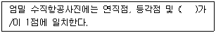
- 사진자료
- 지상기준점
- 주점
- 표정점
(정답률: 70%)
46. 대공표지에 대한 설명 중 옳은 것은?
- 대공표지는 반드시 촬영 전에 설치하여야 한다.
- 대공표지는 천정으로부터 15°이상의 시계를 확보하여야 한다.
- 대공표지의 크기는 사진상 10μm 정도의 크기가 되도록 한다.
- 대공표지의 대상에는 자연점, 기준점, 자침점 등이 있다.
(정답률: 53%)
47. 항공사진측량의 표정에 관한 설명 중 옳지 않은 것은?
- 기복변위식을 사용하여 상호표정요소를 구할 수 있다.
- 공선조건식을 사용하여 외부표정요소를 구할 수 있다.
- 사진지표(fiducial mark)를 이용하여 내부표정을 수행할 수 있다.
- 지상기준점을 이용하여 외부표정요소를 구할 수 있다.
(정답률: 34%)
48. 원격탐사의 정보처리흐름으로 옳은 것은?
- 자료수집 → 자료변환 → 방사보정 → 기하보정 → 판독응용 → 자료보관
- 자료수집 → 방사보정 → 기하보정 → 자료변환 → 판독응용 → 자료보관
- 자료수집 → 자료변환 → 판독응용 → 기하보정 → 방사보정 → 자료보관
- 자료수집 → 방사보정 → 자료변환 → 기하보정 → 판독응용 → 자료보관
(정답률: 56%)
49. 편위수정기로 항공사진을 해석적인 방법에 의하여 편위수정을 할 때 필요한 최소 평면기준점의 개수는?
- 1
- 4
- 6
- 9
(정답률: 48%)
50. 어떤 지역 영상의 일부 화소값이다. 3×3윈도우 크기와 평활화 필터(smoothing filter)를 적용한 결과로 옳은 것은? (단, 평균화 연산에 의하여, 계산은 반올림하여 결정한다.)
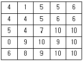
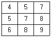
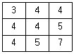
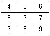
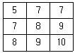
(정답률: 51%)
51. 항공사진측량에서 역입체시에 대한 설명으로 옳은 것은?
- 정입체시가 되는 한 쌍의 사진을 90° 회전시켜 입체시하면 역입체시가 된다.
- 정입체시가 되는 한 쌍의 사진을 180° 회전시켜 입체시하면 역입체시가 된다.
- 정입체시가 되는 한 쌍의 사진을 좌우를 바꾸어 입체시하면 역입체시가 된다.
- 정입체시가 되는 양화필름 대신 음화필름을 사용하여 입체시하면 역입체시가 된다.
(정답률: 62%)
52. 항공사진측량의 고려사항에 대한 설명으로 틀린 것은?
- 비고차가 촬영고도의 20%를 초과할 경우에는 2단 촬영을 한다.
- 표정점은 각 모델당 최소한 평면 좌표만을 알고 있는 3개의 점이 필요하다.
- 카메라 선정에 있어서 동일 촬영 고도의 경우에는 광각 카메라가 보통각 카메라보다 축척은 작지만 경제적이다.
- 산악지역에나 고층빌딩이 밀집된 곳에서는 사각 부분을 없애기 위하여 중복도를 높인다.
(정답률: 32%)
53. 해석적 항공삼각측량 방법이 아닌 것은?
- 광속조정법
- 멀티플렉스법
- 다항식조정법
- 독립모형조정법
(정답률: 59%)
54. 초점거리 15cm인 카메라를 이용하여 지면으로부터 촬영고도 3150m로 촬영한 연직사진이 있다. 이 사진의 크기가 23cm×23cm 이면 1장의 사진에 촬영되는 지역의 면적은?
- 23.3 km2
- 25.2 km2
- 32.5 km2
- 111.1 km2
(정답률: 55%)
55. 인공위성을 이용한 원격탐상의 특징으로 틀린 것은?
- 다중 파장대에 의한 지구 표면의 정보획득이 용이하다.
- 회전주기가 일정하므로 원하는 지점 및 시기에 관측하기 쉽다.
- 짧은 시간 내에 넓은 지역을 동시에 관측할 수 있으며, 반복 관측이 가능하다.
- 관측이 좁은 시야각으로 행하여지므로 얻어진 영샹은 정사투영에 가깝다.
(정답률: 59%)
56. 원격탐사에 이용되고 있는 센서의 측정방식에 대한 설명으로 틀린 것은?
- 센서는 영상획득방식에 따라 프레임방식과 스캐닝방식으로 구분할 수 있다.
- 수동적 방식은 태양광의 반사 및 대상물에서 복사되는 전자파를 수집하는 방식이다.
- 프레임방식에는 across track(whiskbroom)방식과 along track(pushbroom)방식이 있다.
- 능동적 방식은 대상물에 전자파를 쏘아 그 대상물에서 반사되어 오는 전자파를 수집하는 방식이다.
(정답률: 49%)
57. 항공사진측량에서 정의하는 산악지역으로 가장 적합한 것은?
- 산이 차지하는 면적이 한 사진의 60% 이상인 지역
- 산이 차지하는 면적이 한 사진의 70% 이상인 지역
- 사진에서 지형의 고저차가 촬영고도의 5% 이상인 지역
- 사진에서 지형의 고저차가 촬영고도의 10% 이상인 지역
(정답률: 57%)
58. 내부표정에 대한 설명으로 틀린 것은?
- 도화기의 투영중심과 사진주점을 맞추는 작업이다.
- 도화기의 카메라 초점거리를 촬영카메라의 초점거리에 맞추는 직업이다.
- 도화작업 중 제일 먼저 하는 작업이다.
- 내부표정의 미비한 점은 상호표정에서 바로 잡는다.
(정답률: 42%)
59. 초점거리 120mm인 사진기로 촬영고도 1200m에서 종중복도 60%, 횡중복도 30%로 가로 30km, 세로 25km인 지역을 촬영하려고 한다. 사진의 크기가 23cm×23cm 일 때 입체모델의 수는? (단, 촬영은 가로 방향으로 한다.)
- 112모델
- 127모델
- 128모델
- 528모델
(정답률: 48%)
60. 평탄한 토지를 촬영고도 2500m 로부터 초점거리가 153mm 인 카메라로 촬영한 수직사진에서 사진의 연직점으로부터 120mm 떨어진 위치에 굴뚝의 상단이 촬영되어 있고 그 기본변위가 3mm 였다면 굴뚝의 높이는?
- 32.5m
- 40.5m
- 55.5m
- 62.5m
(정답률: 46%)
4과목: 지리정보시스템
61. 지형지물의 체계적인 관리와 효과적인 검색 및 활용을 위하여 다른 데이터베이스와의 연계 또는 지형지물 간의 상호참조가 가능하도록 수치지도의 지형지물에 부여되는 고유 코드로, 사람의 주민등록번호와 같은 역할을 하는 것은?
- 지형코드
- ASCⅡ 코드
- 유일식별자(UFID)
- DB 레코드
(정답률: 57%)
62. 지리정보시스템(GIS)의 자료구조 형태가 다른 것은?
- 비트맵 형태의 수치표고모델(DEM)
- CAD 형태의 수치지형도
- TIFF 형태의 항공사진
- JPEG 형태의 위성영상
(정답률: 57%)
63. 지리정보시스템(GIS)의 일반적인 자료처리 단계를 순서대로 바르게 나열한 것은?
- 자료의 수치화 → 응용분석 → 출력 → 자료조작 및 관리
- 자료조작 및 관리 → 자료의 수치화 → 응용분석 → 출력
- 자료조작 및 관리 → 응용분석 → 출력 → 자료의 수치화
- 자료의 수치화 → 자료조작 및 관리 → 응용분석 → 출력
(정답률: 57%)
64. 지리정보시스템(GIS)의 이용 효과와 거리가 먼 것은?
- 수치화된 자료에 대한 다양한 분석이 가능하다.
- DB 체계를 통하여 자료를 더욱 간편하게 사용하고 자료 입수도 용이하다.
- 투자 및 조사의 중복을 극대화할 수 있다.
- 수집한 자료는 다른 여러 자료와 유용하게 결합할 수 있다.
(정답률: 68%)
65. 지리정보시스템(GIS)에서 사용되는 관계형 데이터베이스 관리 시스템에 대한 설명으로 틀린 것은?
- 테이블의 구성이 자유롭다.
- 모형 구성이 단순하고 이해가 빠르다.
- 정보를 추출하기 위한 질의의 형태에 제한이 없다.
- 테이블의 수가 상대적으로 적어 저장용량을 적게 차지한다.
(정답률: 60%)
66. 공간데이터의 중첩분석에서 음영부분(A+B+C)의 특성을 맞게 설명한 것은?
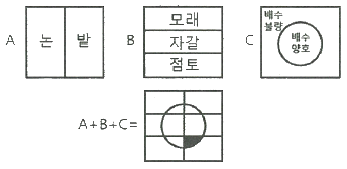
- 모래질 밭이며 배수가 불량한 지역
- 점토질 밭이며 배수가 양호한 지역
- 자갈인 밭이며 배수가 양호한 지역
- 점토질 밭이며 배수가 불량한 지역
(정답률: 70%)
67. 지형을 3차원으로 수치화하여 표현하는 다양한 방법 중 지표면뿐만 아니라 식생, 인공지물 등의 형상을 일정한 평면좌표 간격으로 표현하는 방법은?
- DEM(Digital Elevation Model)
- DSM(Digital Surface Model)
- TIN(Triangulated Irregular Network)
- DTM(Digital Terrain Model)
(정답률: 43%)
68. 공간 관계를 명시적으로 정의하는 것으로서, 인접, 연결, 포함, 근접으로 표현되는 지리적 도형 간 관계를 나타내는 것은?
- location
- attribute
- topology
- database
(정답률: 58%)
69. 지리정보시스템(GIS)의 주요 구성요소와 거리가 먼 것은?
- 자료(data)
- 인력(human)
- 공공 기관(public institution)
- 기술(sotfware 와 hardware)
(정답률: 61%)
70. 메타데이터의 참조정보에 포함되지 않는 것은?
- 제작시기와 연락처정보
- 공간자료의 구성정보
- 데이터 활용정보
- 공간좌표정보
(정답률: 35%)
71. 다음 중 지리정보시스템(GIS)의 공간 검색 방법과 사례가 잘못 연결된 것은?
- 인접성 분석 – 1번 국도에 접하는 토지들의 소유자들은 누구인가?
- 포함관계 분석 – 1~3번 필지를 포함하는 도시는 어디인가?
- 연결관계 분석 – 인구가 100만 이상인 도시는 어디에 위치해 있는가?
- 네트워크 분석 – A시와 B시를 연결하는 최적 경로는 무엇인가?
(정답률: 60%)
72. 관계형 자료모델(Relation Data Model)의 기본 구조요소와 거리가 가장 먼 것은?
- Sort(소트)
- Record(레코드)
- Attribute(속성)
- Table(테이블)
(정답률: 61%)
73. 주어진 Sido 테이블에 대해 아래와 같은 SQL 문에 의해 얻어지는 결과는?
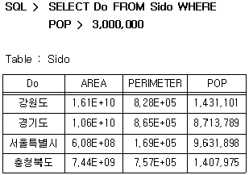
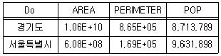
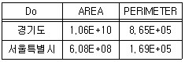
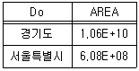
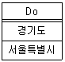
(정답률: 52%)
74. 지리정보시스템(GIS)의 자료입력 방식 중 스캐너를 이용한 자료값이 8비트 형태를 가질 때 기록되는 수치값의 범위는?
- 1 ~ 256
- 0 ~ 255
- 1 ~ 2048
- 0 ~ 2047
(정답률: 56%)
75. 구축된 GIS 데이터를 현장에서 확인하려고 한다. 둘레가 8km인 호수의 현황을 A, B 두 명이 확인하는데 소요되는 최소 시간은? (단, A는 1분이 550m, B는 1분에 450m의 거리를 이동하며, 중복하여 확인하지 않는다.)
- 6분
- 8분
- 10분
- 12분
(정답률: 61%)
76. 수치표고모델(DEM)로부터 얻을 수 있는 자료들로만 짝지어진 것은?
- 경사면의 방향분석도, 경사도에 대한 분석도
- 수계도, 토지피복도
- 가시권에 대한 분석도, 도로망도
- 표고분석도, 역세권분석도
(정답률: 63%)
77. 공간분석 기능 중 하나인 네트워크 분석(network analysis)을 이용한 분석과 가장 거리가 먼 것은?
- 지형 분석
- 자원할당 분석
- 접근성 분석
- 최단경로 분석
(정답률: 44%)
78. 지도를 일반화 하는 개념 중 대상물들을 속성과 속성값에 따라 순서를 정하고, 비교하여 같은 종류끼리 묶는 작업에 대한 정의로 옳은 것은?
- 단순화(simplification)
- 과장(exaggeration)
- 기호화(symbolization)
- 분류(classification)
(정답률: 57%)
79. 지리정보시스템(GIS) 자료구조 중 실세계를 규칙적인 모양으로 공간분할 하여 나타내는 것은?
- 외부 데이터
- 래스터 데이터
- 내부 데이터
- 벡터 데이터
(정답률: 60%)
80. 보간법 중 입력 격자상에서 가장 가까운 영상소의 값을 이용하여 출력 격자로 변환시키는 방법은?
- 최근린보간법
- 공일차보간법
- 공이차보간법
- 공삼차보간법
(정답률: 67%)
5과목: 측량학
81. 축척과 도면의 크기에 대한 설명으로 옳은 것은?
- 축척 1:500 도면을 축척 1:1000으로 변경하면 도면의 크기는 2배가 된다.
- 축척 1:600 도면을 축척 1:200으로 변경하면 도면의 크기는 1/3이 된다.
- 축척 1:600 도면을 축척 1:300으로 변경하면 도면의 크기는 2배가 된다.
- 축척 1:500 도면을 축척 1:1000으로 변경하면 도면의 크기는 1/4이 된다.
(정답률: 61%)
82. 거리측량을 줄자로 할 때 정오차로 볼 수 없는 것은?
- 관측 시 바람이 불어 줄자가 흔들려 발생하는 오차
- 관측 시의 온도가 검정시의 온도와 달라 발생하는 오차
- 줄자의 길이가 표준길이와 달라 발생하는 오차
- 줄자의 처짐으로 인한 오차
(정답률: 50%)
83. 두 점의 평면직각좌표계의 북방을 기준으로 계산되는 측선의 방향을 무엇이라 하는가?
- 도북 방위각
- 진북 방향각
- 진북 방위각
- 자북 방위각
(정답률: 43%)
84. 직사각형 토지의 가로, 세로를 줄자(tape)로 관측하여 37.8m, 28.9m을 얻었다. 이때 줄자의 공차가 30m에 대하여 4.7 cm 이었다면 이로 인하여 생길 수 있는 면적의 최대 오차는? (단, 거리관측의 오차는 길이에 비례한다.)
- 0.003 m2
- 0.03 m2
- 2.74 m2
- 3.4 m2
(정답률: 27%)
85. 삼각측량을 실시하여 A점(1000m, 1600m), B점(3300m, 3100m), ∠BAC=62°의 결과를 얻었다면 측선 AC의 방위각(αAC)은?
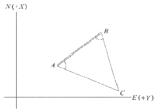
- 33° 6′ 41″
- 56° 53′ 19″
- 95° 6′ 41″
- 18° 53′ 19″
(정답률: 39%)
86. 트래버스측량에 있어서 방위각이 300°일 때 계산된 위거가 50m 이었다면, 측선의 거리는?
- 25m
- 43m
- 80m
- 100m
(정답률: 37%)
87. A점을 출발하여 B점까지 3개의 노선을 통해 수준측량을 실시하였다. A, B 2점간의 고저차에 대한 최확값은?
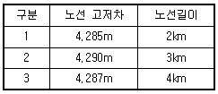
- 4.290m
- 4.289m
- 4.288m
- 4.287m
(정답률: 45%)
88. 오차의 종류 중 확률론과 최소제곱법으로 소거해아 하는 오차는?
- 과오
- 우연오차
- 정오차
- 기계오차
(정답률: 61%)
89. A점(-1750m, -2132m)에서 B점까지의 거리는 300m이고 방위각이 120°이라면 B점의 좌표는? (단, 소수점 이하의 값은 버림)
- (-354m, -398m)
- (-1900m, -1872m)
- (296m, -233m)
- (-1778m, 1958m)
(정답률: 44%)
90. 등고선의 성질에 대한 설명으로 옳은 것은?
- 등고선은 동굴과 절벽에서는 교차할 수 있다.
- 등고선은 지표의 최대경사선 방향과 평행하다.
- 등고선은 도면 내에서는 폐합하지만 도면 외에서는 폐합하지 않는다.
- 등고선의 간격이 좁다는 것은 지표의 경사가 완만하다는 것을 뜻한다.
(정답률: 55%)
91. 각 측량에서 발생될 수 있는 연직축 오차의 조정 방법으로 옳은 것은?
- 망원경을 정위, 반위로 측정하여 평균값을 취한다.
- 연직축과 수평 기포관 축의 직교를 조정한다.
- 180°의 차이가 있는 두 개의 수평각 표시기의 각을 읽어 평균한다.
- 수평축과 시준축의 직교를 조정한다.
(정답률: 39%)
92. 수준측량에 의해 관측되는 표고의 기준은?
- 회전타원체
- 베셀타원체
- 지오이드
- 지표면
(정답률: 53%)
93. 등경사지에 위치한 A점의 표고가 37.65m, B점의 표고가 53.25m 일 때, 두 점 사이의 도상길이는 68.5mm 이다.
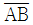
선상에 위차한 표고 40.00m 인 지점과 A점의 도상 거리는?- 7.8mm
- 8.5mm
- 10.3mm
- 15.2mm
(정답률: 37%)
94. D점의 평면좌표를 구하기 위하여 그림과 같이 기지삼각점 A, B, C로부터 삼각측량을 하였다. 다음 중 이용 가능한 변방정식은? (단, 각의 명칭은 그림에 따르며, 일반적인 명칭부여 방법과 다를 수 있음)
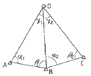
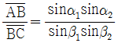
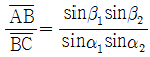
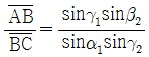
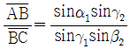
(정답률: 40%)
95. 공공측량 작업계획서에 포함되어야 할 사항과 거리가 먼 것은? (단, 그 밖에 작업에 필요한 사항은 제외)
- 공공측량의 투입 인력 명단
- 공공측량의 위치 및 사업량
- 공공측량의 사업명
- 사용할 측량기기의 종류 및 성능
(정답률: 52%)
96. 다음 중 기본측량성과의 필수적인 고시내용이 아닌 것은?
- 측량의 종류
- 측량의 정확도
- 측량성과의 보관 장소
- 측량 작업의 방법
(정답률: 33%)
97. 아래와 같이 정의되는 용어로 옳은 것은?
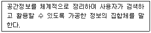
- 공간정보체계
- 공간객체등록
- 공간정보데이터베이스
- 국가공간정보통합체계
(정답률: 49%)
98. 측량기준점에서 국가기준점에 해당되지 않는 것은?
- 공공삼각점
- 수로기준점
- 통합기준점
- 지자기점
(정답률: 34%)
99. 공간정보의 구축 및 관리 등에 관한 법률 제정의 목적으로 옳지 않은 것은?
- 국토의 효율적 관리
- 해상교통의 안전에 기여
- 국민의 소유권 보호에 기여
- 업무의 규제와 경비절감에 기여
(정답률: 60%)
100. 공간정보의 구축 및 관리 등에 관한 법률의 벌칙 중 3년 이하의 징역 또는 3천만원 이하의 벌금에 처하는 경우는?
- 성능검사를 부정하게 한 성능검사대행자
- 속임수, 위력 등으로 측량업 또는 수로사업과 관련된 입찰의 공정성을 해친 자
- 측량기준점표지를 이전 또는 훼손하거나 그 효용을 해치는 행위를 한 자
- 고의로 측량성과 또는 수로조사 성과를 사실과 다르게 한 자
(정답률: 61%)